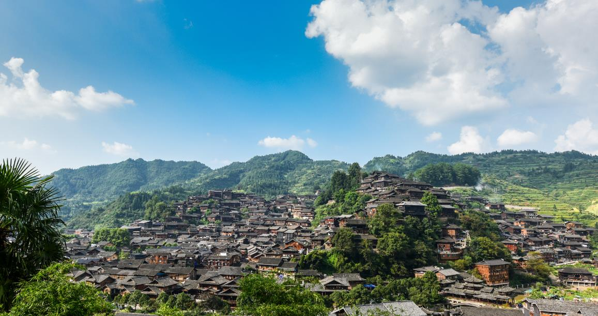

|  |

来自山西朔州，喜欢美食和摄影，爱好短跑，在班级里面担任宣委 为班级献计献策，为适应社会需要，我始终以提高自身能力为要求，树立正确的人生观，价值观，发挥自己的特长，挖掘自己的潜能。
燕子雯，抗压能力强，对新事物保持好奇心，做事稳重，注意自我提升，不被外界影响，随机应变能力强，为人坦率，“海阔凭鱼跃，天高任鸟飞”，我需要一个广阔的空间来展示自己，同时我也希望能发挥自己的作用，在自己能力范围内做好每一件事情，做好本职工作，尽职尽责完成每一项任务。
来自山西朔州，喜欢美食和摄影，爱好短跑，在班级里面担任宣委 为班级献计献策，为适应社会需要，我始终以提高自身能力为要求，树立正确的人生观，价值观，发挥自己的特长，挖掘自己的潜能。
我对短跑有着浓厚的兴趣。每当我站在起跑线上，感受着风吹过脸颊，我的心跳就会加速，全身的血液都沸腾起来。短跑让我感受到了速度与激情的碰撞，让我充满了活力和斗志。 我喜欢短跑的瞬间爆发力和快速冲刺的感觉。在短跑中，我追求的不仅是速度，还有对自我的挑战和突破。每一次的起跑、加速和冲线，都是对自己极限的挑战，让我不断超越自己。 为了提高自己的短跑能力，我定期进行训练。我注重腿部力量的训练，通过深蹲、跳绳等练习来增强爆发力。同时，我也注重技巧的训练，如起跑姿势、步幅控制和呼吸调整等，以提高跑步的效率和稳定性。 短跑不仅是一项运动，更是一种精神的追求。它让我学会了坚持、毅力和自律，培养了我的竞争意识和团队合作精神。无论在比赛中还是日常生活中，短跑都给予我无穷的动力和信心。 我相信短跑会一直陪伴着我，成为我生活中的一部分。它不仅让我身体健康，更让我心态积极，享受着运动带来的快乐和成就感。我会继续努力训练，追求更快的速度和更好的成绩，同时也希望能够通过短跑，激励和感染身边的人，让他们加入到运动的行列中来。